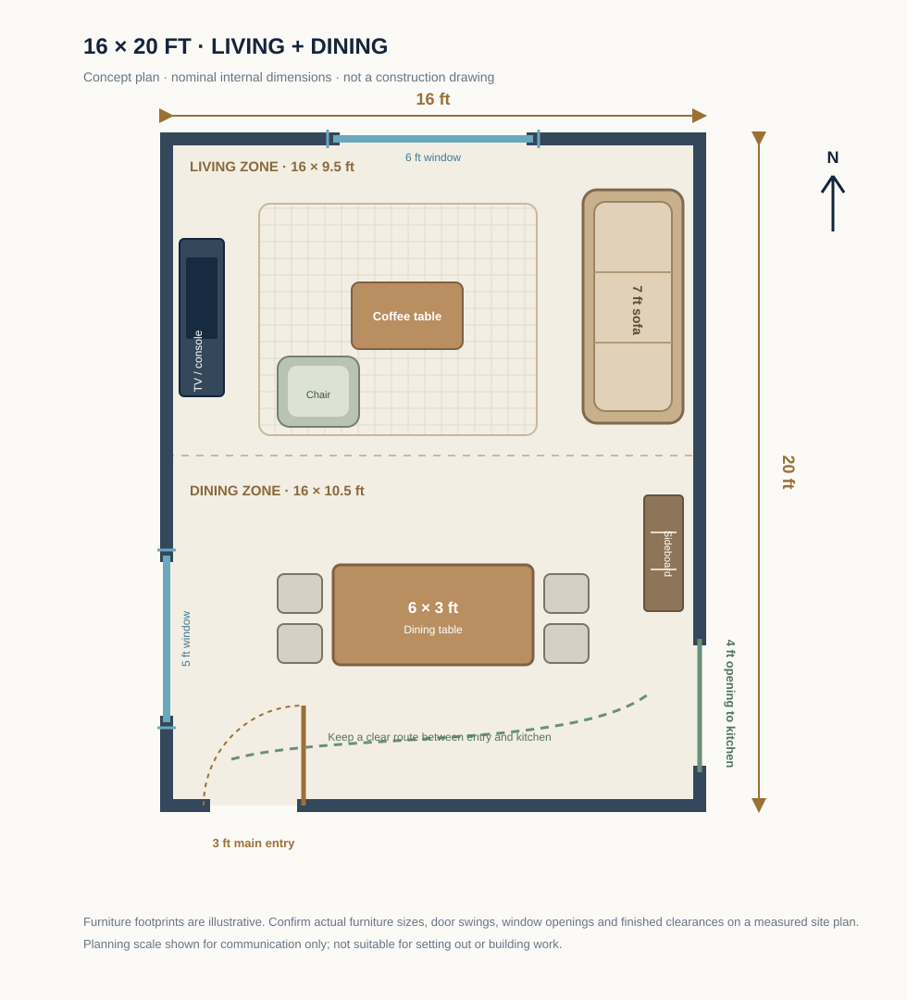
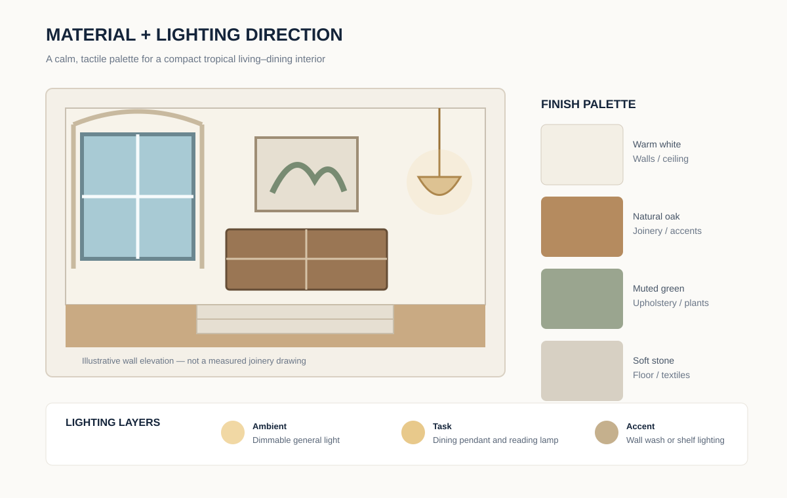

Interiors · Practical Design Guide
A Calm Tropical Living–Dining Interior for a 16 × 20-Foot Room
A connected living and dining room can feel generous without being filled with oversized furniture. This 16 × 20-foot concept uses two clear activity zones, a direct route between the main entrance and kitchen, a warm natural palette and several layers of light. The aim is a room that feels relaxed in daily use, is straightforward to maintain and can be adapted to different furniture budgets.
1. The design brief and room proportions
The assumed finished internal rectangle is 16 feet wide by 20 feet long, measured between the finished wall faces. Its nominal area is 320 square feet. The north half is treated as the living zone, approximately 16 × 9.5 feet (152 square feet), while the south half is the dining zone, approximately 16 × 10.5 feet (168 square feet). These are planning zones within one open room, not separate enclosed rooms.
The concept assumes a 3-foot-wide main entrance on the south wall, positioned toward the west side, and a 4-foot-wide open connection to the kitchen on the east wall near the south end. A 6-foot window is shown on the north wall and a 5-foot window on the west wall in the dining zone. The arrangement is only a starting point: a real site may need different openings because of sun, prevailing wind, views, privacy, security or neighbouring buildings.
Rather than dividing the room with a full-height wall, the design uses a rug, furniture orientation and a dining pendant to create visual zones. This keeps the space connected while allowing each activity to have a recognisable centre.
2. Conceptual 2D furniture plan

| Element | Concept size or position | Planning reason |
|---|---|---|
| Overall room | 16 × 20 ft | 320 sq ft nominal clear internal area |
| Living zone | 16 × 9.5 ft at the north | Seating, media wall and a large rug |
| Dining zone | 16 × 10.5 ft at the south | Table, four chairs and a sideboard |
| Main sofa | About 7 × 3 ft, along the east wall | Faces the media wall and keeps the middle open |
| Media console | About 5 × 1.25 ft, west wall | Shallow storage without a deep cabinet projection |
| Dining table | About 6 × 3 ft, centred in the dining zone | Four everyday seats; extend only if clearances allow |
| Main entrance | 3 ft opening on south wall | Direct entry into the shared room |
| Kitchen connection | 4 ft opening on east wall near the south end | Convenient serving route without a full-height divider |
| Windows | 6 ft north; 5 ft west in dining zone | Potential daylight and ventilation, subject to site conditions |
3. Furniture placement and everyday circulation
Living area
Place the 7-foot sofa against the east wall, with its long side running north–south. It faces a shallow media console on the west wall. A coffee table of roughly 3 × 2 feet sits between the sofa and the media wall, while an accent chair can occupy the north-west part of the seating group. An 8 × 9-foot rug is a useful starting size for visually gathering the furniture, but the final rug should be selected after the actual sofa and chair footprints are known.
As a comfort guideline, leave roughly 16–18 inches between the sofa seat edge and the coffee table so people can reach it without making the passage awkward. Check the viewing distance against the chosen screen size and the manufacturer's recommendations. Avoid tall cabinets in front of windows, and make sure curtains can open fully without catching on furniture.
Dining area
A 6 × 3-foot rectangular table provides a practical starting point for four seats. Place two chairs on each long side, or use end chairs only if the table and room still allow a comfortable route. A 5 × 1.5-foot sideboard can sit against the east wall, but keep it clear of the kitchen opening and any door swing. If the household needs six seats every day, test a smaller table with an extension leaf rather than assuming a larger fixed table will fit.
Keep a clear route
Trace the route from the main entrance to the kitchen before fixing the furniture. A clear path around 36 inches wide is a useful early planning target for a comfortable main route, not a statement of legal or accessibility compliance. Dining chairs need additional pull-back space; allow approximately 30–36 inches where practical, then check the actual chair depth and the route behind a seated person. If wheelchair access, ageing-in-place or another specific accessibility need applies, have the layout reviewed against the relevant local standards by a qualified professional.
4. Doors, windows and climate response
The entrance is shown on the south wall near the west corner. Its swing should be checked against the sofa, rug and any console table. The kitchen connection is a 4-foot open passage on the east wall; it should remain free of sideboards, tall plants and loose furniture. If a door is later added, redraw the swing and verify that it does not collide with dining chairs or appliances.
The north window brings daylight into the living zone, while the west-side dining window gives the table a natural-light source. In a hot climate, west-facing glazing may need external shading, a verandah, screen or carefully selected glazing to limit afternoon heat and glare. Operable windows can help with natural ventilation, but airflow depends on the actual wind direction, the opposite openings, insect screens, security and nearby obstructions. Do not assume the illustrated openings will meet a local ventilation requirement.
Use curtains or blinds that can be cleaned and operated easily. A sheer layer can soften daytime light, while a lined or solar-control layer may help with glare and privacy. Select fabrics for the local humidity and cleaning routine rather than choosing them only from a showroom sample.
5. Furnished 3D concept and visual zoning

The 3D view helps explain the height and visual weight of the furniture. Keep the sofa back low enough to preserve sightlines across the room. A slim media unit, open-legged dining chairs and a table with a visually light base can make the floor feel less crowded. Use one or two larger plants rather than many small pots placed along the main route.
Do not copy the drawing without measuring the actual furniture. Sofa arms, recliner mechanisms, dining chair backs, curtain stacks and cabinet handles all affect the usable space. A scaled furniture plan using the manufacturer's dimensions is more reliable than judging fit from a perspective image.
6. Warm, durable material palette

- Walls: A warm white or very light neutral keeps the room bright without the starkness of a cool white. Use a washable finish where hands, children or pets are likely to mark the surface.
- Timber: Natural oak tones can appear in the dining table, media console or a small number of shelves. Choose a finish and substrate appropriate to local humidity and maintenance conditions.
- Flooring: Matte porcelain tile is often practical in humid or high-traffic homes. Engineered timber or another resilient finish may be considered where the subfloor, moisture conditions and maintenance plan are suitable. Confirm slip resistance, cleaning requirements and installation details with the supplier.
- Upholstery: Muted green, sand or taupe can add softness without overwhelming the room. Removable, washable covers are useful for busy households.
- Textiles: Linen-look curtains, a textured rug and a few cushions introduce warmth. Use rug underlay suitable for the selected floor and keep rug edges out of door swings.
- Accent finish: A small area of timber slats, textured paint or a framed artwork can create a focal point. Avoid applying several competing feature materials in one compact room.
Order samples before committing to large quantities. A timber stain can look much darker at night, and a floor tile can appear cooler or more reflective under different lighting. View samples vertically and horizontally, at morning, afternoon and evening, before finalising the palette.
7. Layered lighting plan
Plan lighting around activities instead of relying on one bright central fitting. The living area benefits from comfortable ambient light, a reading lamp near the accent chair and a gentle accent light on artwork or shelving. The dining table can have a pendant centred over it, provided its height and brightness do not obstruct sightlines or create glare.
- Ambient lighting: Use a balanced ceiling layout with dimming where compatible, so the room can shift from daytime tasks to a relaxed evening setting.
- Task lighting: Provide a reading light at the sofa or chair and suitable light over the dining table for meals and homework.
- Accent lighting: A wall washer, shelf light or picture light can add depth, but keep drivers and access points serviceable.
- Controls: Group living, dining and accent circuits so they can be controlled independently. Confirm switching locations, load calculations, earthing, protection and cable routes with a licensed electrician.
Warm-white lamps in the approximate 2700–3000 K range can create a relaxed atmosphere, while the final colour appearance should be tested with the chosen wall paint and timber. The electrician must select suitable fittings, circuits and protection for the actual installation and local regulations.
8. Electrical, data and service coordination
Before plastering or closing ceilings, mark the likely locations for television power, data or network connections, router equipment, charging points, floor or table lamps and the dining pendant. Keep outlets accessible after furniture is placed; a socket hidden behind a fixed sideboard is difficult to use. Avoid trailing extension leads across the main circulation path.
Coordinate any air-conditioning, ceiling fan, ventilation or dehumidification equipment with the ceiling layout, window positions and furniture. A fan should not conflict with a pendant or create uncomfortable airflow directly over a dining table. If the room connects to a kitchen, consider cooking odours, noise and the route for any mechanical extract system. A qualified electrician and building-services professional should design and inspect the actual installation.
9. Storage, acoustics and maintenance
Use a shallow sideboard for dining items and closed storage in the media console for cables and small equipment. Keep open shelves selective: a few books, ceramics and framed pieces are easier to maintain than many small decorative objects. If additional storage is required, measure the wall and door clearances before designing built-ins.
Hard floors, large windows and bare walls can make a room sound lively. A rug, curtains, upholstered seating and a few soft furnishings can reduce reflected sound. In a family home, choose fabrics that can be cleaned and floor finishes that tolerate the household's normal footwear and cleaning routine. Leave access to electrical points, network equipment and any service panels rather than concealing them behind permanent joinery.
10. Interior fit-out sequence
- Measure and confirm: Survey the finished room dimensions, wall plumb, floor level, openings and any columns or beams. Record the actual furniture and appliance sizes.
- Coordinate services: Agree lighting, switches, sockets, data, fan or air-conditioning positions with the electrician and relevant building-services professionals.
- Complete dusty work: Finish any approved wall repairs, ceiling work, wiring changes and service adjustments before installing delicate finishes.
- Prepare surfaces: Check substrate moisture and flatness as required by the flooring and paint manufacturers.
- Install fixed finishes: Complete flooring, paint, window treatments and any designed built-in joinery in a coordinated order.
- Place furniture and test: Set out the sofa, table and chairs, then walk the entrance-to-kitchen route and check door, drawer and curtain operation.
- Commission lighting: Test each circuit, dimmer and fitting; correct glare and uneven light before final styling.
11. Cost planning without false precision
A reliable interior budget cannot be calculated from a concept image alone. Prices vary by country, city, supplier, date, labour availability, taxes, room condition and product specification. Build a local cost schedule using current quotations and separate the following items:
| Budget line | What to measure or quote | Cost drivers |
|---|---|---|
| Surface preparation | Wall and ceiling repair, primer and paint area | Existing condition, number of coats and finish quality |
| Flooring | Net floor area plus supplier-recommended waste allowance | Tile or timber type, adhesive, skirting and labour |
| Furniture | Sofa, chair, table, dining chairs and media unit | Dimensions, frame, upholstery, hardware and delivery |
| Window treatments | Window width, drop, track and fabric quantity | Fabric type, lining, track system and installation |
| Lighting and electrical | Fittings, switches, circuits and wiring changes | Fixture specification, ceiling access and electrician's scope |
| Joinery and storage | Measured sideboard, media storage or shelving | Board type, finish, hardware and site installation |
| Professional services | Design, electrical review and other required inspections | Scope, location and applicable requirements |
Ask suppliers to state the product, quantity, unit, delivery, installation, tax and quotation validity date. Keep a contingency appropriate to the uncertainty and condition of the existing room. Do not treat online inspiration prices as a local quotation or a guaranteed project total.
12. Who may find this interior useful?
This arrangement may suit a household that wants a connected living and dining space, a four-seat everyday table and a warm, uncluttered appearance. It is less suitable if the room has several doors, major structural projections, a very large entertainment system or a requirement for frequent six-to-eight-person dining. Those needs should be drawn into the plan before furniture is purchased.
13. Image concepts and future render briefs
The three diagrams above are original explanatory SVG illustrations created for this article. They are not photographs of a completed home. If you commission photorealistic visuals later, use these briefs so the views remain consistent with the same 16 × 20-foot design:
Create a realistic architectural interior concept of a 16 × 20-foot tropical living–dining room, viewed from the south entrance toward the north living zone. Show a 7-foot warm beige sofa along the east wall facing a shallow media console on the west wall, an 8 × 9-foot neutral rug, a compact coffee table, one muted-green accent chair, a 6 × 3-foot oak dining table with four chairs in the south zone, a slim sideboard, a 6-foot north window and a 5-foot west dining window. Use warm white walls, matte light-stone flooring, natural oak details, linen curtains and layered warm lighting. Keep the circulation route from the entrance to the east-side kitchen opening clear. No people, no labels, no invented dimensions, no structural claims. Label the result as a conceptual render.
Create a clean, photorealistic top-down 3D interior visualization of the same 16 × 20-foot room. Preserve the same north living zone, south dining zone, east-wall sofa, west-wall media console, 6 × 3-foot dining table, four chairs, south entrance, east kitchen opening and the two window positions. Use a restrained warm-neutral palette and show realistic furniture footprints and clear walking routes. Do not add extra rooms, doors or furniture. No text labels; this is an illustrative concept, not a measured construction plan.
Create a professional interior materials board for the same warm tropical living–dining scheme: warm white washable wall paint, natural oak joinery, matte stone-look floor tile, muted green upholstery, textured neutral rug, linen-look curtains and three lighting layers (ambient, dining task and soft accent). Show physical-looking material samples and a small matching interior vignette. Keep colours consistent with the other two views and identify it as a design concept, not a completed-project photograph.
14. Related DreamHome Plans guides
- Room Layout Ideas — explore the wider room-planning collection.
- Living Room Layouts — compare seating and media arrangements.
- Kitchen Layouts — plan the adjoining kitchen work zones.
- 30 × 40-Foot Tropical Modern Courtyard Home — see a complete-home concept with connected shared spaces.
- House Plans — browse whole-home planning guides.